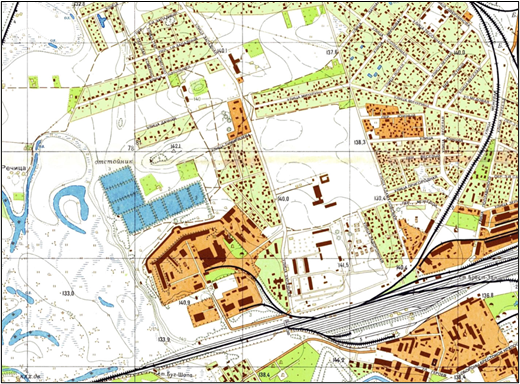
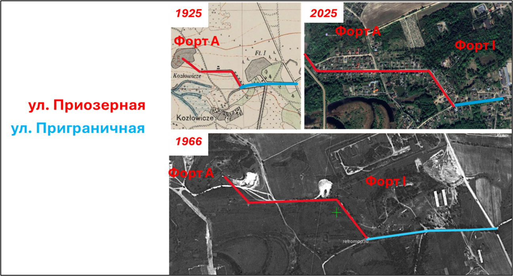
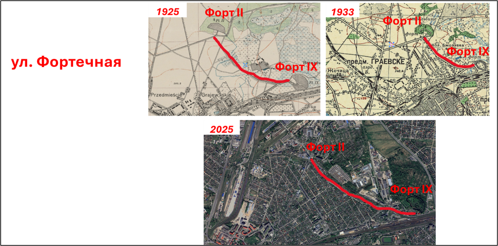
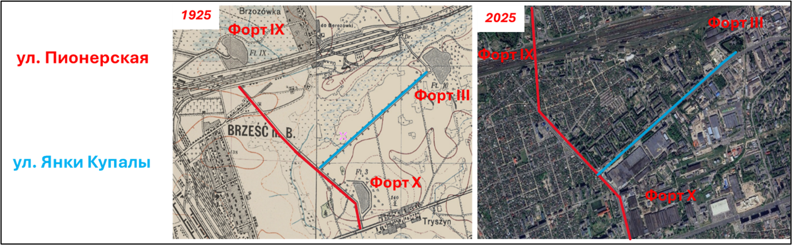
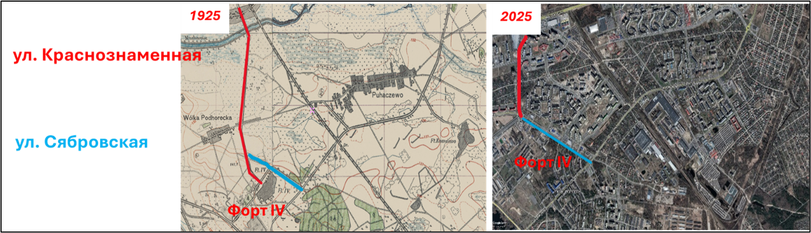
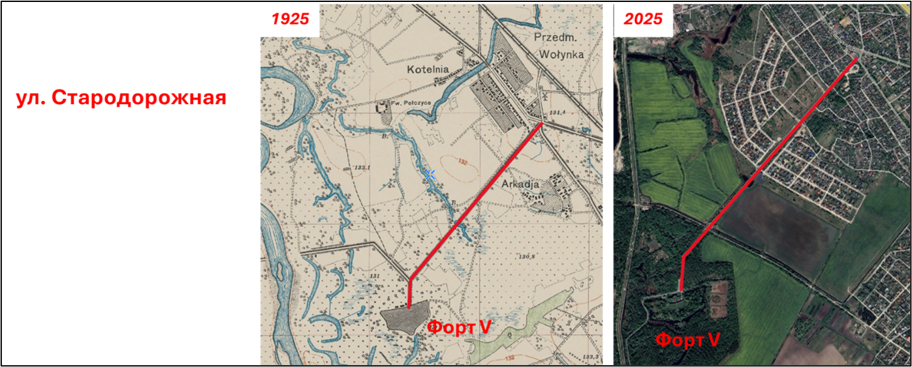
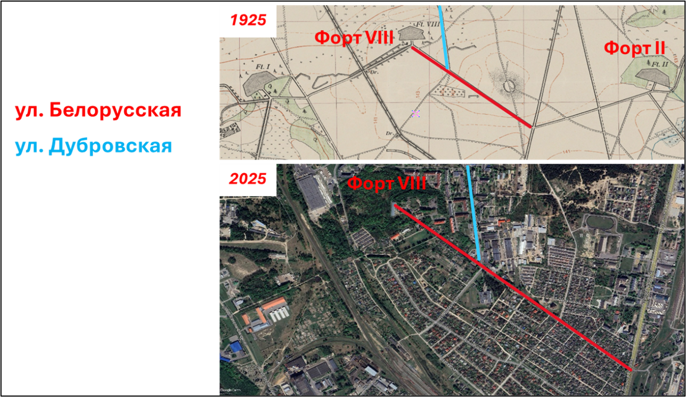

Строительство Брестской крепости в первой половине XIX в. почти на век определило статус Бреста как гарнизонного города. Однако, вместе с тем, выбор места ее возведения при впадении р. Мухавец в р. Западный Буг внес кардинальные изменения в жизнь города также еще и по той причине, что это крайне выгодное стратегическое положение будущей крепости совпадало с существующей жилой застройкой, административными и культовыми строениями. Более того, это то место, которое по летописным источникам известно с 1019 г. Это был исторический центр древнего Берестья, который, едва отпраздновав свое 800-летие, предстал в новом обличье. Фактически сам город был перенесен и воздвигнут восточнее на 2 км. В современном Бресте этот микрорайон известен как «Центр», ограниченный с севера железнодорожной веткой «Варшава – Москва», с запада – ул. Ленина, с востока – бульваром Космонавтов, с юга – р. Мухавец. Несколько позднее в 1877–1880 гг. с развитием железнодорожного транспорта к востоку от современного бул. Космонавтов возник так называемый Интендантский городок, по сути представляющий собой огромный складской комплекс для продовольственного, вещевого и боевого обеспечения. Но парадоксальным является тот факт, что дальнейшее развитие фортификационных укреплений системы Брестской крепости в виде двух фортовых поясов 1876–1915 гг., происходившее за периметром города, предопределило контуры пространственного развития Бреста и формирование его промышленного комплекса. Так, первый форт «Граф Берг» послужил основой для крупнейшего предприятия пищевой промышленности не только Бреста, но и Беларуси в целом – Брестского мясокомбината. Неспроста, улица, на которой расположено предприятие, ранее именовалась «Форт». Значимость данного форта с градостроительной точки зрения заключается в преобразующей роли на д. Речица, которая в 1968 г. вошла в состав Бреста, фактически слившись с бывшим поселком мясокомбината (в черте города с 1958 г.) и сформировав одноименный микрорайон.
Рисунок 1 – Микрорайон «Речица» и Брестский мясокомбинат (территория форта «Граф Берг» на карте Бреста 1970 г.)
Но главное влияние фортов на развитие Бреста связано с дорогами, которые изначально соединяли форты в единую сеть между собой и центральным ядром Брестской крепости. Затем они стали основой транспортных осей новых микрорайонов, в том числе возникших путем включения в городскую черту пригородных сельских поселений.
Форт A и форт I задали пространственные параметры развития микрорайона «Козловичи» (в черте Бреста с 2007 г.). Подъездные пути к фортам сформировали главные улицы микрорайона – Приграничная и Приозерная.
Рисунок 2 – Подъездные пути к фортам A и I как системообразующие оси микрорайона «Козловичи»
Для обеспечения коммуникации между фортами II и IX, а также для связи с центральным ядром крепости через Граевское предместье была проложена дорога, которая в настоящее время соответствует ул. Фортечная. Кроме того, эта улица ранее выходила к Каменецкому шоссе (сейчас – улица Лейтенанта Рябцева) и обеспечивала, с одной стороны, выход к северным воротам крепости, а с другой – связь с фортом VIII («Б»). Таким образом, восточный, юго-восточный и северный контуры микрорайона «Граевка» сформированы в результате фортификационного строительства. И если форт II в 1960-е гг. был разрушен, а на его месте сооружены складские и производственные строения, то форт IX в послевоенные годы стал базой Брестского государственного университета имени А.С. Пушкина для проведения исследований в области аграрных и биологических наук.
Рисунок 3 – Форты II и IX в системе застройки микрорайона «Граевка»
Строительство форта III ознаменовало прокладку новой дороги, ставшей спустя десятилетия ул. Пионерской. Причем эта дорога с юга вела к Московскому шоссе, а в северном направлении соединяла его с фортом IX. Приблизительно к востоку от центральной точки дороги был заложен еще один форт – форт X. Соответствующее ответвление дороги заложило ось будущей магистральной улицы Янки Купалы. Данная улица стала системообразующей для микрорайона «Заводская» в западной части. В восточной части улица разделяет промышленную зону, примыкающую к железной дороге «Брест–Москва», от жилого микрорайона «Восток».
Рисунок 4 – Форты III и X как детерминанты улиц Пионерская и Янки Купалы
Возведение форта IV рядом с д. Вулька-Подгородская (в 1968 г. включена в состав города) в южном секторе крепостного периметра сопровождалось не только строительством подъездной дороги, ставшей в настоящее время ул. Краснознаменной. В настоящее время улица формирует одну из ключевых магистралей планировочного района «Вулька». В 1990-е гг. рядом с микрорайоном «Вулька-Подгородская» возник квартал жилой застройки, положивший начало массовому строительству в юго-западной части Бреста. Кроме того, в 1920-е гг. рядом с фортом возник военный городок, ставший впоследствии микрорайоном «Южный». Сам форт частично использовался для складских целей, а также воинской пожарной части.
Рисунок 5 – Форт IV как фактор формирования улиц Краснознаменная и Сябровская
Возведение форта V, который является наиболее уцелевшим, ознаменовалось обустройством качественного подъездного пути от Ковельского шоссе. Впоследствии этот участок дороги получил наименование ул. Стародорожная. В настоящее время эта улица относится к микрорайону «Аркадия–Гершоны», образованному в результате вхождения двух одноименных деревень в состав Бреста в 2007 г. Район представляет собой территорию частной застройки. Северная часть улицы, примыкающая к Ковельской улице (городское продолжение Ковельского шоссе) рядом с пороговым погребом № 4, была застроена еще в середине XX в. Центральная часть из-за ранее располагавшейся части ПВО стала активно застраиваться только в 2010–2020-е гг. В перспективе следует ожидать продолжение застройки и в южной части улицы в сторону форта.
Рисунок 6 – Форт V в формировании застройки города Бреста
Форт VIII (Литеры «Б») на ряду с бывшей д. Дубровка может по праву считаться ядром микрорайона «Дубровка» и «Лысая Гора». Улица Белорусская, которая является центральной для микрорайона «Лысая Гора» (бывшая деревня, с 1958 г. в черте Бреста), соответствует дороге, в свое время предназначенной для обеспечения связи с соседним фортом II, а через Каменецкое шоссе и с самой Брестской крепостью. К северу, югу и востоку от форта VIII сформировалась многоэтажная застройка микрорайона «Дубровка». Кроме того, ул. Белорусская, подходя к горжевой части форта со стороны нынешней улицы Лейтенанта Рябцева с юго-востока, под углом почти 90° уходит на юго-запад в сторону форта I, расположенного в Козловичах.
Рисунок 7 – Определяющая роль форта VIII в формировании улиц Белорусская и Дубровская
В отличие от литерных фортов первого оборонительного пояса форты второй линии оказали существенно меньшее значение на пространственное развитие города. Это объясняется тем, что их возведение аккурат совпало с началом Первой мировой войны и лишь малая их часть была готова хотя бы частично. Более того, при отступлении русских войск в 1915 г. даже недостроенные объекты, обращенные фронтальной стороной на восток, были взорваны. На формирование транспортной сети и будущих линий застройки, в частности, оказали форт «Е» и форт «Г». Благодаря строительство форту «Г» был образован остов Городского переулка (микрорайон «Плоска»).
Форт «Е» обусловил прокладку дороги, впоследствии сформировавшей ул. Кобринскую – одной из каркасных улиц микрорайона «Пугачево». Здесь расположена производственная база Брестского государственного производственного лесохозяйственного объединения и Брестского предприятия мелиоративных систем УП «Брестводстрой». На территории недостроенного форта, ограниченного на местности сохранившимися участками рва, расположено садовое товарищества «Южное».
Таким образом, «настоящее» фортификационных сооружений Брестской крепости представлено не только мемориальным комплексом, но и сохранившимися оборонительными объектами и главное сформированным благодаря им транспортным магистралям и центральным улицам микрорайонов современного Бреста.
Важно и то, что эти объекты имеют историческую, культурную и идеологическую ценность. И будущее этих объектов определяется их вовлечением в туристическую и экскурсионную деятельность, а также широким использованием в рекреационной и природоохранной деятельности. Анализ географического положения, характера прилегающей застройки и степени сохранности позволяет представить перспективные направления использования фортификационных сооружения в общественных интересах.
На базе форта «А», включая прилегающую территорию с существующим заказником «Барбастелла», рекомендуется обустройство экологических троп. Экологическая направленность видится превалирующей в использовании форта «З». В качестве рекреационных локаций с обустройством пешеходных и велосипедных дорожек, лавочек целесообразно функциональное использование фортов I, IV, VIII (Б). Представляется закономерным передачу форта IX в городскую коммунальную собственность с организацией парка отдыха, ориентированного на жителей микрорайона «Березовка» и жителей планируемого района, ограниченного с востока улицей Радужной и с запада – железнодорожной веткой, исходящей в северном направлении от железнодорожной магистрали «Брест–Москва». Перспективное развитие форта V связано с расширением экспозиций и внедрением интерактивных элементов, направленных на повышение привлекательности объекта как музейного учреждения. На территории форта «Ж» приоритетным представляется создание мемориальной экспозиции, посвященной погибшим в ходе Второй мировой войны жителям Бреста.